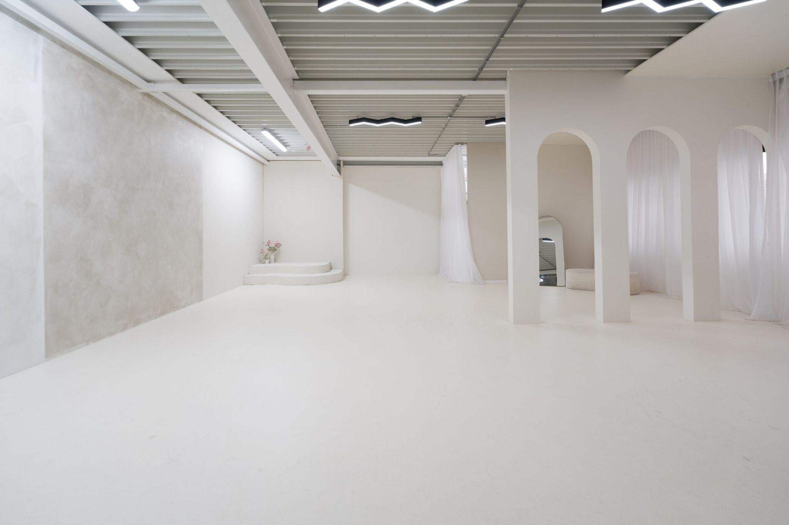

Social media marketingbureau met eigen fotostudio
Wij zorgen dat je bedrijf gezien wordt.
KIJK62 neemt je social media volledig uit handen. Wij maken de foto's en video's in onze eigen studio, schrijven de teksten, bouwen je LinkedIn op en posten op al je kanalen. Jij keurt goed en doet verder waar je goed in bent.
- Eigen fotostudio in Poeldijk
- Teksten in jouw toon
- Eén aanspreekpunt voor alle kanalen
Bedrijven die ons voorgingen
Bekijk het portfolioKIJK62 in het kort
KIJK62 is een social media marketingbureau uit Poeldijk (Westland), vlak bij Den Haag, met een eigen fotostudio. We helpen bedrijven online zichtbaar te groeien door het complete social media beheer over te nemen: strategie, fotografie en video, teksten, LinkedIn, inplannen, posten, reageren en maandelijkse rapportage. Klik op een kanaal en zie wat we daar doen.
Diensten
Alles voor je social media, onder één dak
Je hoeft geen fotograaf, tekstschrijver en social media manager apart te zoeken. Bij KIJK62 zit het in één team, met één planning.
Social media beheer
Wij plannen, posten, reageren en rapporteren. Jij keurt goed in één overzicht.
Lees meerContent & fotografie
Eigen beelden in plaats van stockfoto's, gemaakt bij jou op locatie of in onze studio.
Lees meerLinkedIn marketing
Een bedrijfspagina en een eigen profiel waar klanten en sollicitanten op klikken.
Lees meerTeksten die klinken als jij
Captions, posts en artikelen in de toon van je bedrijf.
Lees meerReels & korte video
Korte video's die opvallen in de feed, met ondertiteling.
Lees meerWebsite laten maken
Een professionele website op maat, gevonden door Google én AI-zoekmachines.
Lees meerROI-calculator
Wat levert het je op?
Schuif met je eigen cijfers. Je ziet direct hoeveel nieuwe klanten je nodig hebt en wanneer je de investering hebt terugverdiend.
Opbrengst – tegenover een investering van – in 12 maanden.
Rekenvoorbeeld op basis van jouw eigen aannames, geen garantie. Social media heeft opbouwtijd: we rekenen maand 1 zonder nieuwe klanten en bouwen in vier maanden op naar je volle scenario.

Eigen fotostudio
Geen stockfoto's. Jouw mensen, jouw producten.
Mensen scrollen voorbij aan beelden die ze al honderd keer gezien hebben. Daarom maken we je content zelf, in onze studio in Poeldijk of op locatie.
- Eén studiodag, weken aan postsWe plannen de shoot rond je contentkalender, zodat elk beeld een plek heeft.
- Altijd het juiste formaatElk beeld uitgesneden voor feed, reels, stories en LinkedIn.
- Portretten voor je teamVoor LinkedIn, je website en je vacatures.
Werkwijze
Zo nemen we het van je over
Zes stappen, waarvan jij er twee zelf doet. De rest regelen wij.
- Jij + KIJK62
Kennismaking
We bespreken je bedrijf, je klanten en wat social media moet opleveren. Gratis en vrijblijvend.
- KIJK62
Strategie & contentplan
We kiezen de kanalen, de toon en de onderwerpen, en zetten de eerste maand in een contentkalender.
- KIJK62
Studiodag
We fotograferen en filmen in onze studio in Poeldijk of bij jou op locatie. Alles voor de komende weken.
- KIJK62
Schrijven & inplannen
We schrijven de teksten, kiezen de beelden en plannen alles op het beste moment in.
- Jij
Goedkeuren
Je ziet alle posts vooraf in één overzicht. Akkoord of een aanpassing? Eén klik.
- KIJK62
Posten, reageren, rapporteren
We posten, reageren op berichten en sturen je elke maand een rapport met wat werkte.
Voor wie
Voor bedrijven met een goed verhaal en te weinig tijd
We werken voor mkb'ers die weten dat social media belangrijk is, maar er zelf niet aan toekomen.
Bouw & installatie
Projecten in beeld, vakmanschap laten zien en personeel vinden.
Tuinbouw & handel
Kwekers, handel en toeleveranciers die hun product willen laten zien.
Zakelijke dienstverlening
Advies, accountancy en juridisch: vertrouwen opbouwen via LinkedIn.
Horeca & retail
Gerechten, producten en acties die mensen naar binnen halen.
Beauty & wellness
Salons en studio's die een volle agenda willen.
Zorg & welzijn
Praktijken die laten zien wie er achter de deur werkt.
Werkgevers
Bedrijven die via social media nieuwe collega's zoeken.
Startende ondernemers
Vanaf dag één een professionele uitstraling.
Vanuit Poeldijk actief inWestlandDen HaagNaaldwijkMonsterWateringenDe LierRijswijkDelftZoetermeerRotterdamheel Nederland
Vragen
Social media uitbesteden, hoe werkt dat?
Staat je vraag er niet bij? Bel of mail ons, dan leggen we het uit.
Wat doet een social media marketingbureau zoals KIJK62?
KIJK62 neemt je social media volledig uit handen. We bepalen samen de doelen, maken foto's en video in onze eigen fotostudio in Poeldijk, schrijven de teksten, plannen en posten op alle kanalen, reageren op berichten en sturen je elke maand een rapport.
Wat levert social media uitbesteden op?
Twee dingen: tijd en klanten. Je krijgt de uren terug die je nu zelf aan social media besteedt, en je bouwt zichtbaarheid op bij klanten en sollicitanten. Met onze ROI-calculator reken je uit hoeveel nieuwe klanten per maand je nodig hebt om de investering terug te verdienen.
Op welke kanalen posten jullie?
LinkedIn, Instagram, Facebook, TikTok en je Google Bedrijfsprofiel. We kiezen samen de kanalen waar jouw klanten echt zitten.
Hoeveel tijd kost het mij als ondernemer?
Na de kennismaking en de studiodag vooral een paar minuten per week: je keurt de geplande posts goed in één overzicht. De rest doen wij.
Waarom is een eigen fotostudio een voordeel?
Je krijgt eigen beelden in plaats van stockfoto's. In de studio maken we op één dag beelden voor weken aan posts, in de juiste formaten voor elk kanaal.
Werken jullie alleen in het Westland?
Nee. De studio staat in Poeldijk, dus we werken veel voor bedrijven in Westland, Den Haag, Delft, Rijswijk en Zoetermeer. Social media beheer doen we voor bedrijven in heel Nederland.
Klaar om gezien te worden?
Plan een gratis kennismaking. We kijken samen naar je bedrijf, je klanten en wat social media voor je kan doen. Zonder verplichtingen.